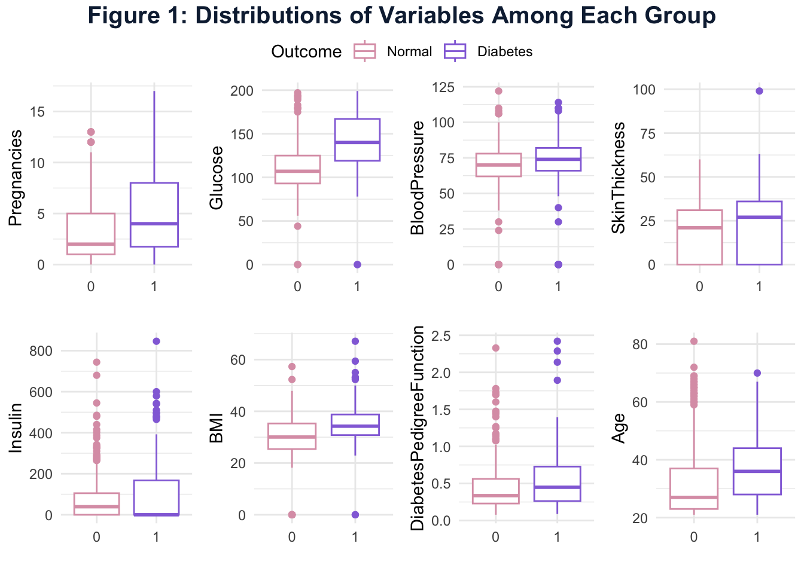
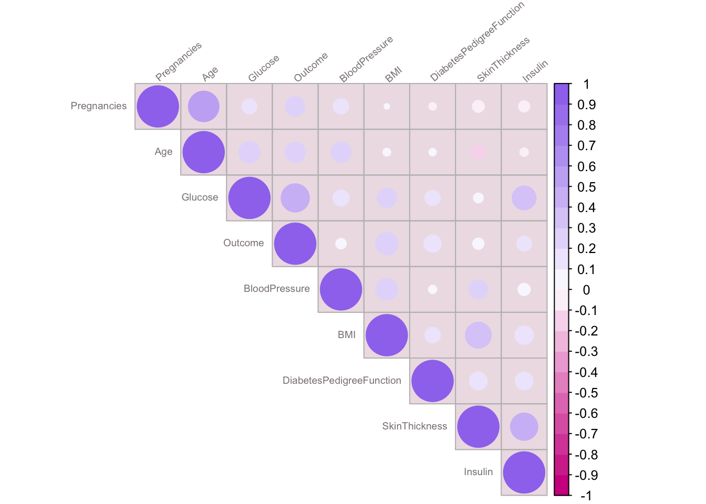
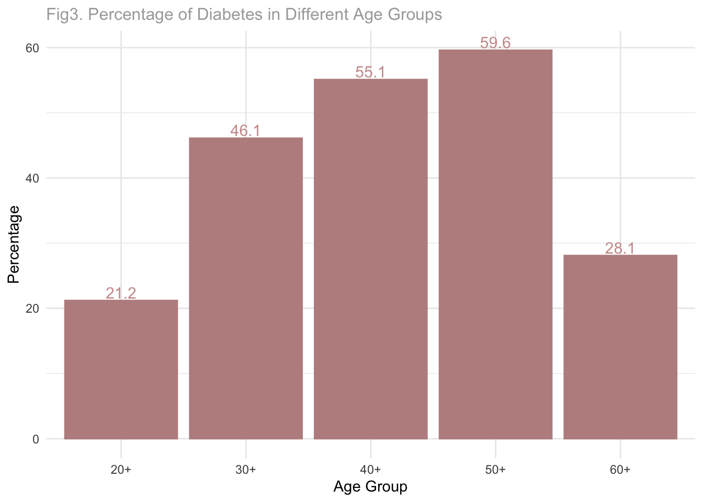
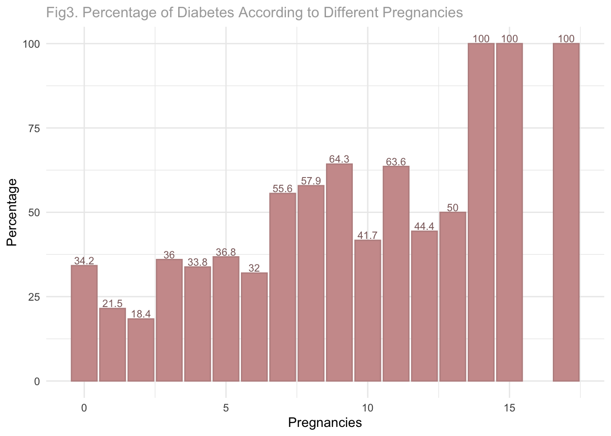

At one time, diabetes was always referred to as a disease of the elderly, yet in fact the incidence of diabetes in young people has increased by nearly 70% in the last decade. With the improvement of living standard, material life grows richer, various snacks and high-sugar beverages appear in the market, resulting in the youth’s distaste for plain water. Moreover, the popularity of computers and the internet has significantly reduced the youths’ outdoor exercises frequencies leading to lack in physical activities. Besides, since the youths usually live a fast-paced life, they often stay up late and suffer from serious long-term mental tension, which increases the secretion of hormones that raises blood glucose in the body, such as glucocorticoids and adrenaline. As a result, the prevalence of diabetes increases dramatically among young people nowadays.
In addition, epidemiological studies have found that people with diabetes are more than twice as likely to develop cardiovascular disease as non-diabetics, including premenopausal women, a group that is generally at lower risk for cardiovascular disease. Although diabetes affects men and women equally, women are more severely affected by its consequences. Women are more susceptible to blindness due to diabetic retinopathy compared to men. Pregnancy may worsen pre-existing diabetic retinopathy and kidney disease. Women with diabetes are four times more likely to have a stroke than non-diabetes. Besides vulnerability to diabetes, women also have less access to healthcare services especially in low-income countries where economic, political, and social discrimination is severe. As a result, compared to men, women are more vulnerable, have less access to treatment and health care, and less support to cope with the consequences of diabetes.
Therefore, our project aims to find a model to diagnostically predict whether a female patient has diabetes based on diagnostic measurements included in the dataset with the hope of increasing prodromal care before getting the disease and promoting health keeping behaviors.
We are trying to find which factors would help us predict diabetes among all the eight possible variables.
We use one dataset drawn from Kaggel which is originally from the
National Institute of Diabetes and Digestive and Kidney. Our dataset
includes 768 observations for 9 varibles. The objective of this dataset
is to predict diabetes diagnostically, based on the medical measurements
in the data. This dataset contains eight independent medical predictors
which might be associated with diabetes occurrence and one dependent
variable outcome. The data source is female patients at
least 21 years old of Pima Indian heritage.
For the step of data cleaning, we load the raw data, reduce the outline data for all eight measurements, and reorganize the variables name. There are no null values, so no action was done to fill the dataset.
We convert outcome to factor data type for future
analysis.
We start with visualizing the distributions of variables among each group, whether the eight diagnostic measurements are related to diabetes or not. Since our outcome variable is a binary variable, the box plot were used to visualize the relationship between factors and diabetes. The y-axis was defined as the diagnostic measurement result and x-axis were grouped by female with diabetes or not. The results of all box plots are shown in figure 1.

Results reveal that different groups of females have different medians of diagnostic results, which indicate that the factors have linear or nonlinear association with diabetes.
Before fitting the model, the collinearity between different factors needed to be tested. We used the corrplot function to test the collinearity. The plot result shows that there no significant correlation relationship between all eight variables, although the SkinThickness variable and Insulin variable has a light purple color which indicate they might correlated, the index is only about 0.6 which is not significantly correlated and also we do not include the SkinThickness variable in the final model which will be discussed later. Thus, we can conclude that all the eight variables can be used to fit a model and find the prediction rate of diabetes.

Since the age and pregnancy factors are most concerned. We use the bar plot to visualize the proportion of diabetes among stratified number of pregnancies and age group.
“Men generally have heart disease in their 40’s and 50’s, about a decade before women. But this is generally not true for diabetic women. For diabetic women, the cardiovascular risk occurs earlier. Diabetes takes away much of the protection premenopausal women would normally get from estrogen.” —Kapur, A., & Seshiah, V. (2017)
According to the figure 3, the diabetes proportion gets higher with the increase of age variable, and the age group of 50-60 years old has the highest diabetes proportion. Generally, age factors have a positive association with diabetes proportion.

We also examine the association between pregnancy and diabetes proportion, as it can be seen in the plot below, as the pregnancy frequency increases the diabetes proportion also increases, and when the pregnancy frequency is 17 times, diabetes proportion reaches a hundred percent.

Since the outcome of diabetes was a binary variable in our dataset(1 = disease, 0 = no disease), we used the Logistic model to obtain the primary model which includes every diagnostic measurement in the model to explore the relationship between these measurements and diabetes. A logistic model models the probability of an event occurring by letting the log odds of the event be a linear combination of one or more independent variables. The analysis uses binary variable regression and models the probability of diabetes occurring with all the variables. Since the full model includes every measurement and does not perform statistical analysis and comparisons with other models to see its predictive ability, therefore it needs to be further analyzed and improved to get prediction optimization.
The full model result shows Pregnancies,
Glucose, BloodPressure, BMI, and
DiabetesPredigreeFunction are significantly related to
diabetes odds, while SkinThickness, Insulin
and Age are not significantly related to diabetes odds.
The full model gives an AIC around 783. Due to the non-significant variables included in the model and high AIC, we need to adjust our model.
The other model was fitted using stepwise regression that is a
step-by-step iterative construction of a regression model involving the
selection of independent variables. It adds or removes potential
explanatory variables one by one and test s for statistical significance
after each iteration. The stepwise regression generates six predictors
of statistical significance including Pregnancies,
Glucose, BloodPressure, BMI, and
DiabetesPredigreeFunction, and Age. The final
model eliminatingSkinThickness and Insulin has
a smaller AIC.
While stepwise regression select variables sequentially, the best
subsets approach aims to find out the best fit model from all possible
subset models. Best subset regression selects the best model from all
possible subsets according to some goodness-of-fit criteria. The best
model it generated includes seven predictors: ’Pregnancies,
Glucose, BloodPressure, BMI, and
DiabetesPredigreeFunction, and Age, and
Insulin.
To compare across three models, we use a cross validation approach that splits the data into two sets: one set is used to train the model and the remaining set is used to test the model. We split so that 80% is used for training a regression model and 20% is used to evaluate the model performance.
The process works as follow:
The results are shown in following table.
Mean Absolute Error (MAE) gives the absolute difference between the actual values and the values predicted by the model for the target variable. If the value of the outliers does not have much to do with the accuracy of the model, then MAE can be used to evaluate the performance of the model.
Akaike Information Criterion (AIC) assesses how well a model fits the data it generates.The calculation of the AIC relies on the number of independent variables used to build the model and the maximum likelihood estimate of the model. According to AIC, the best-fitting model is the one that explains the greatest amount of variation with the fewest independent variables, whichFewer variables will also enhance the optimization of the model to reduce error. Each redundant predictor added to the model will introduce a penalty.
AUC stands for “Area under the ROC Curve.” An ROC curve is a graph showing the performance of a classification model at all classification thresholds. AUC measures the entire two-dimensional area underneath the entire ROC curve. The higher the AUC score, the better the classification of the predicted values is. For example, if we consider a model to predict and classify whether the outcome is ‘Diabetes’’ or ‘Normal’, a high AUC indicates that the model is capable of classifying ‘Diabetes” as ’Diabetes” and ‘Normal’ as ‘Normal’ more efficiently. There are two reasons why we compare AUC. On one hand, AUC is scale-invariant. It measures the ranking of predictions rather than their absolute values. On the other hand, AUC measures the quality of the model’s predictions irrespective of what classification threshold is chosen. Full model and subset model’s AUC is slightly higher than the stepwise model but not with significant statistical value.
Prediction accuracy was calculated by predicting the testing data using the model fitted from the training data. If the predicted value is less than 0.5, we classified it as 0. If the predicted value is larger than 0.5, we classified it as 1. Then we computed the ratio of predicted value from the test data to the observed value of testing data to see how much percentage of the predicted value matched to the observed value and recorded it as prediction accuracy.
From the comparison table, we see that it returns similar values among RMSE of 0.42, MAE of 0.35, prediction accuracy of 0.74. Stepwise regression’s AIC and AUC is slightly lower than the full model’s and subset model’s respectively but the difference is not statistically significant. Therefore, we select the stepwise regression model with the fewest predictors following the principle of parsimony.
The final best model generated is as following: \((pi/1-pi) = 1.021(Pregnancies)+1.006(Glucose)+0.998(BloodPressure)+1.013(BMI)+1.151(DiabetesPedigreeFunction)+1.003(Age)\)
pi is the probability for diabetes
On average, for one more pregnancy, the estimated increase in diabetes odds is 1.021, holding other variables constant.
For one unit increase in glucose, the estimated increase in diabetes odds on average is 1.006, holding other variables constant.
For one mmHg increase in blood pressure, the estimated increase in diabetes odds on average is 0.998, holding other variables constant.
For one unit increase in BMI, the estimated increase in diabetes odds on average is 1.013, holding other variables constant.
For one unit increase in diabetes pedigree function, the estimated increase in diabetes odds on average is 1.151, , holding other variables constant.
For one year increase in age, the estimated increase in diabetes odds on average is around 1.003, holding other variables constant.
The six predictor estimators were listed in the table, and four of them have a positive association with diabetes. However, we discovered that the blood pressure and Glucose variables have the estimated odds around one, which implies no relationship with diabetes. What we expect is that the Glucose and blood pressure variable will help us predict the disease of diabetes. One possible explanation is that units of Glucose and blood pressure variables are very small. A diminutive unit increase of these two variables results in only a slight change in the outcome of p/1-pi. Therefore, the coefficient will be close to 1 as the overall change is little. The small increase is caused by the absolute change in the values instead of the small influence of glucose and blood pressure on diabetes.
Glucose and blood pressure will be at their normal range if people do not have disease, and the odds result of these two only represent the rate of outcome as unit change as we considered the unit of the glucose and blood pressure is small. Also, the measure method and difference in measurement time will affect the glucose and blood pressure result. That might be the reason why the odds of glucose and blood pressure are around one
In the process of detailed data analysis, we identified several
variables that were most strongly associated with diabetes:
Pregnancies, Glucose,
Blood Pressure, BMI,
Diabetes Pedigree Function and Age. The key
variables were determined through odds ratio as the model building uses
logistic methods. The logistic full model ,stepwise regression and best
subset models were also obtained to make prediction of whether a patient
will have diabetes or not.
In our hypothesis, we expected diabetes to be associated with pregnancies, glucose, blood pressure, BMI, Diabetes Pedigree Function and age.The stepwise model gives the model which contains 6 variables compared with the five variables model of what we expected, and further increased the accuracy and prediction ability.
The dataset we analyzed proved that the DiabetesPedigreeFunction variable has the most important effect on diabetes, which means the family factor plays an important role in diabetes. Next index refers to Pregnancies, the more times women have pregnancy, the higher probability they will have diabetes. For the other variables, glucose and blood pressure, it will result in the probability of diabetes increasing as the value of the measurements increase. From the above analysis, the best way to avoid diabetes is just to look up the family history, try to avoid unnecessary pregnancy and measure glucose, blood pressure regularly.
The R-squared value is 0.27, relatively low, which implies that not many variances in the outcome could be explained by the predictors in our model. This problem could result from potential influential outliers. Our model is based on data of only Indian females, its application generalization and transformity is limited.